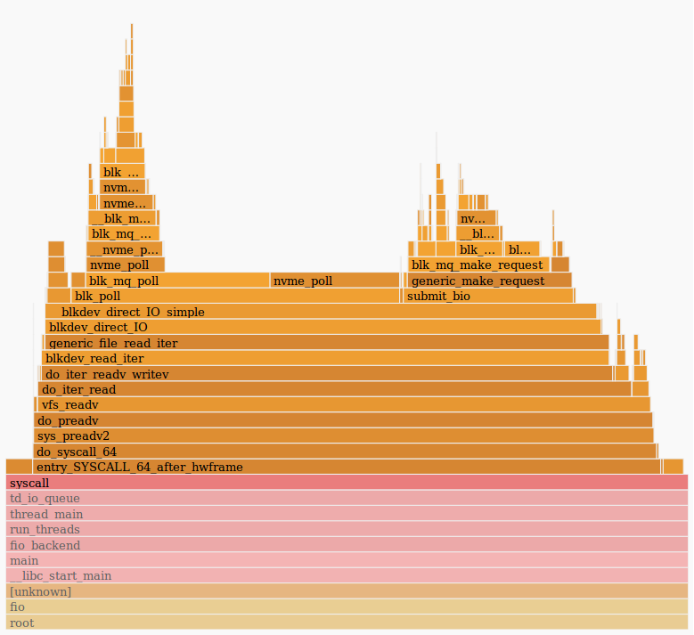

Flame Graph – это визуализация иерархических данных трассировки стека профилированного ПО, которая была разработана инженером Netflix Бренданом Греггом для решения проблем с производительностью MySQL. Чтобы быстро и подробно понять потребление ресурсов ЦП вместо изучения большого количества текстовой информации, генерируемой обычными средствами профилирования и трассировки ПО, Брендан Грегг проследил вызовы функций ЦП и визуализировал их. Получившиеся графики были похожи на пламя с отслеживанием времени по оси Х. Чтобы снизить накладные расходы на трассировку функций, Брендан сделал выборку (профилирование) синхронизированным и изменил порядок выборки, чтобы максимизировать слияние кадров. Для повышения наглядности потребления ресурсов ЦП Брендан решил использовать только теплые цвета, чтобы показать занятость CPU.
Flame-график сортирует и агрегирует трассировки на каждом уровне стека, чтобы их количество отражало процент от общего времени, затраченного ЦП в этой части кода.
По оси X отображается заполнение профиля стека, отсортированное в алфавитном порядке, а по оси Y показана глубина стека, считая снизу от нуля. Каждый прямоугольник представляет кадр стека. Чем шире рамка, тем чаще она встречается на графике. Flame-графики строятся путем многократной выборки трассировки стека. Каждый вызов метода представлен полосой, длина которой пропорциональна тому, сколько раз она присутствует в выборке. Верхний край показывает, что находится на ЦП, а под ним — его происхождение.
Flame-графики могут представлять как статическую, так и динамическую (интерактивную) визуализацию, если они показываются как анимация друг за другом в течении времени.
Пример Flame-графика:

Данный график позволяет ответить на следующие вопросы: